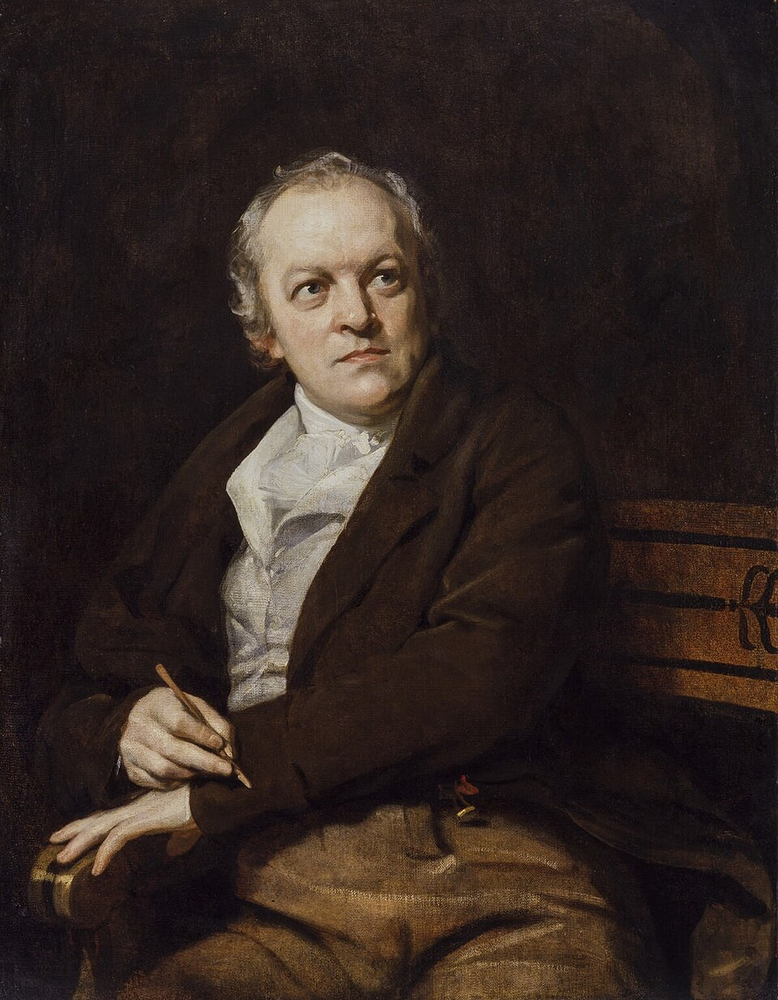

Poeta, grabador y pintor inglés
William Blake
1757–1827
Nacido en Londres el 28 de noviembre de 1757 1, atribuyó a una visión de su hermano Robert, muerto en 1787, el secreto de su «Illuminated Printing»: texto e imagen trazados sobre el cobre con un líquido resistente al ácido 2. El método le permitió ser a la vez cajista, impresor, encuadernador y vendedor de su poesía 2; Catherine Boucher, con quien casó en 1782, le ayudaba a colorear e imprimir 2, y no hay dos ejemplares iguales 3. Tras el fracaso de su exposición de 1809 se hundió en la pobreza 25; sus últimos años, gracias a John Linnell, fueron más cómodos 3. En su mitología, Urizen encarna la razón 4. Murió en Londres el 12 de agosto de 1827 13.